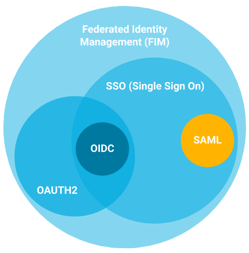

Different protocols of SSO
There are mainly four types of SSO protocols. It is must for an application to choose the right protocol.
- OAuth
- OAuth is an open standard for authorization. It allows users to grant websites or applications access to their information on other websites but without giving them the passwords.
- The protocol allows an application to enable access to users services to other applications. When a user requests a service from a service provider then it redirects the user to a trusted provider for further authentication.
- This protocol should be used when it’s required to offer temporary access to third-party resources on the behalf of authentic user. Ex - A photo sharing app (acts as an OAuth consumer) that permits users to import photos from their Instagram profile (OAuth provider). The OAuth provider sends a temporary token to the photo sharing app that expires after some time.
- SAML (Security Assertion Markup Language)
- SAML protocol specifies a protocol for resource users to authorize access to third-party to service resources without the need of sharing their credentials.
- When a user requests a service from a service provider, the service provider redirects him to a trusted identity provider for authentication.
- This protocol should be used when users have to access single sign-on web services. Ex - When a user is authenticating with a flight booking website (service provider) then a request is sent to AirFlyer (identity provider) which is SAML configured. All the details are provided to the service provider by the identity provider and a user can book his flight ticket without further authentication.
- OpenID Connect (OIDC)
- OpenID is a type of decentralized authentication protocol. The protocol allows users to authenticate using co-operating sites.
- Users can login to applications that support OpenID authentication only by selecting OpenID providers. Anyone can easily set up OpenID providers.
- This protocol should be used when it’s required to provide authentication to your applications and web services to users without requesting them to create new accounts. Ex - Let’s take the example of photo sharing app again. The app allows users to post photos by only logging in to their social media account (Facebook OpenID) or Google OpenID provider.
- WS-Fed
- Ws-Fed is a type of SSO protocol that allows users to access services from different platforms based on mutual trust. The federation is based between relying parties and identity providers.
- The working of WS-Fed protocol is very close to SAML protocol. A SAML token is issued by the identity provider to provide authentication with service providers.
- It can be used for all the cases that are for SAML protocol. Most commonly it is used where there are numbers of different service providers. When the user has to debit money from an ATM machine. He can debit money from any ATM regardless of bank. An authentication request is sent to the identity provider by the service provider. After verification, access is granted.
